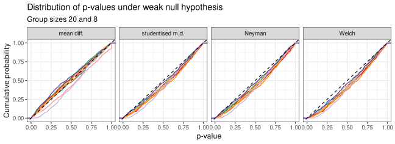
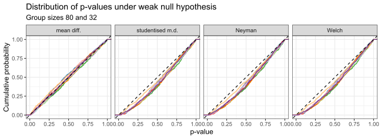
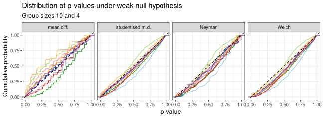

Code
studentised_mean_diff <- function(x, group) {
v_hat <- var(x[group == 1]) / length(x[group == 1]) +
var(x[group == 0]) / length(x[group == 0])
(mean(x[group == 1]) - mean(x[group == 0])) / sqrt(v_hat)
}Jan Vanhove
July 13, 2026
In a previous post, I explained how randomisation tests work and why they are a sensible choice when analysing the data from a randomised experiments with a null hypothesis test. In this post, I want to take a closer look at the distinction between so-called strong or sharp (Fisherian) and weak (Neymanian) null hypotheses and how they can be tested. This post is in a way a synopsis of chapters 3, 4, and 8 of Ding’s (2024) First course in causal inference.
Under the randomisation model, we posit that there are two potential outcomes \(y_i(0)\) and \(y_i(1)\) for each unit \(i = 1, \dots, m\) in a randomised experiment with two conditions, only one of which is observed:
The quantities \(y_i(0), y_i(1), i = 1, \dots, m\) are unknown but fixed quantities in the present set-up – they are not random variables. What are random variables are the data that are actually observed. The randomness is introduced by the random assignment of units to conditions.
According to Fisher’s strong null hypothesis, there is no differential treatment effect for any of the units:
\[H_{oS}: y_i(0) = y_i(1) \text{ for } i = 1, \dots, m.\]
As I’ve explained before, this strong null hypothesis can be tested exactly by means of a randomisation test using any definable test statistic. This test statistic could be the observed mean difference between the two conditions, the observed difference between the condition medians, the probability of superiority – anything the analyst deems sensible.
A test statistic that I did not use in the other blog post but that is important now is the studentised mean difference:
\[ t := \frac{\widehat{y}(1) - \widehat{y}(0)}{\sqrt{\widehat{V}}}. \]
In this equation, \(\widehat{y}(0), \widehat{y}(1)\) are the condition means in the first and second condition, respectively, and \(\widehat{V}\) is defined as
\[ \widehat{V} := \frac{\widehat{S}^2(0)}{n_0} + \frac{\widehat{S}^2(1)}{n_1}, \]
where \(\widehat{S}^2(0)\) and \(n_0\) are the sample variance and the group size in the first condition and \(\widehat{S}^2(1)\) and \(n_1\) are the sample variance and the group size in the second condition. Incidentally, this definition of \(t\) agrees with the one used in Welch’s t-test, i.e., the \(t\)-statistic you get when running R’s t.test() with the default parameter setting var.equal = FALSE.
The following code snippet defines a function for computing the studentised mean difference.
I’ve also copied the function for running a randomisation test from the other blog post.
randomisation_test <- function(
# Randomisation test of strong null in two-group comparison.
x, # outcome
group, # grouping variable (0 or 1)
fun, # function for computing test statistic from x and group
delta = 0, # delta for strong null hypothesis
alternative = "two_sided", # two-sided, left-sided or right-sided p-value?
M = 19999, # number of new randomisations generated
plot = TRUE, # plot histogram of test statistic under H0?
... # parameters passed to histogram
) {
test_stat <- fun(x, group)
x[group == 1] <- x[group == 1] - delta
test_stat_H0 <- replicate(M, {
fun(x, sample(group))
})
test_stat_H0 <- c(test_stat, test_stat_H0)
if (plot) {
hist(test_stat_H0, ...)
abline(v = test_stat, lwd = 2)
}
p_left <- mean(test_stat_H0 <= test_stat)
if (substr(alternative, 1, 1) == "l") return(p_left)
p_right <-mean(test_stat_H0 >= test_stat)
if (substr(alternative, 1, 1) == "r") return(p_right)
min(2 * min(p_left, p_right), 1)
}These functions can be used like so:
# Define some data
d <- structure(list(
Group = c(0, 0, 0, 0, 1, 0, 1, 0, 1, 1, 1, 0,
1, 1, 1, 1, 0, 1, 0, 1, 0, 0, 1, 1, 1, 1, 0),
Outcome = c(7, 8, 9.5, 8.5, 7.5, 9, 8, 7.5, 10, 8, 8.5,
8, 9, 10.5, 8, 9, 7.5, 9, 9.5, 11, 8, 8, 7.5, 9, 9.5, 8.5, 8.5)),
class = "data.frame", row.names = seq_len(27))
# Randomisation test with studentised mean difference
randomisation_test(d$Outcome, d$Group, studentised_mean_diff, plot = FALSE)[1] 0.1032Randomisation testing pretty easily achieves exact finite-sample inference for the strong null hypothesis and can straightforwardly be justified in randomised experiments. However, two drawbacks in particular bear mentioning.
The first concerns the construction of sensible confidence sets. It is possible to construct confidence sets for, for instance, a constant treatment shift \(\delta\). This involves testing the strong null hypothesis that the differential treatment effect is \(\delta\) for all units:
\[ H_{oS}(\delta): y_i(1) = y_i(0) + \delta \text{ for } i = 1, \dots, m. \] A \((1-\alpha)\) confidence set for the constant treatment shift is then given by the set of all \(\delta\) for which \(H_{oS}\) cannot be rejected at the \(\alpha\) level. Confidence sets for constant multiplicative effects (i.e., \(y_i(1) = \gamma y_i(0)\) for \(1 \leq i \leq m\)) can similarly be constructed.
However, if the data are not compatible with such a constant additive (or multiplicative) effect, the confidence set may be empty. Moreover, since it often seems unrealistic that any non-zero effect should be the same in all units the \(\delta\) (or \(\gamma\)) parameter for which we construct a confidence set may have little bearing to reality.
The second drawback of randomisation testing under Fisher’s strong null hypothesis is that it assumes no differential treatment effect for any unit. But perhaps we’re more interested in testing the less restrictive null hypothesis that there is no differential treatment effect on average.
Whereas the strong null hypothesis posits that \(y_i(1) = y_i(0)\) for all units, the weak null hypothesis only posits that this is true on average in the sample. Let \[\overline y(0) := \frac{1}{m}\sum_{i=1}^m y_i(0)\] and \[\overline y(1) := \frac{1}{m}\sum_{i=1}^m y_i(1)\] denote the average outcomes if every unit in the experiment had been assigned to the first and to the second condition, respectively. Neyman’s weak null hypothesis posits that the difference \(\tau := \overline y(1) - \overline y(0)\) between these average is zero: \[H_{oW}: \tau = 0.\] Fisher’s strong null hypothesis implies Neyman’s weak null hypothesis, but the latter can hold even if the former doesn’t, namely when the individual treatment effects aren’t all zero but happen to cancel each other out.
For each unit, we observe either \(y_i(0)\) or \(y_i(1)\), so we don’t observe \(\overline y(0), \overline y(1)\) or \(\tau\), either. Instead, we estimate \(\tau\) as sample mean difference between the outcomes observed in the first and second conditions: \[\widehat \tau := \widehat y(1) - \widehat y(0).\] It can be shown that in a randomised experiment in which \(y_i(0), y_i(1), i = 1, \dots, m\) are treated as fixed quantities, the variance of the random quantity \(\widehat \tau\) can be estimated conservatively as \[ \widehat{V} = \frac{\widehat{S}^2(0)}{n_0} + \frac{\widehat{S}^2(1)}{n_1}, \] which is the quantity we used in the denominator of the studentised mean difference in the previous section (Ding 2024, Theorem 4.1). What we mean when we say that \(\widehat V\) conservatively estimates the variance of \(\widehat \tau\) is that the expected value of \(\widehat V\) is at least as large as the variance of \(\widehat \tau\), i.e., \(\mathbb{E}(\widehat V) \geq \mathrm{Var}(\widehat \tau)\).
Further, it can be shown that the quantity \[ \frac{\widehat \tau - \tau}{\sqrt{\text{Var}(\widehat \tau)}} \] has an asymptotic standard normal distribution under some regularity conditions (Ding 2024, Theorem 4.2). What this means is that, under some conditions, we can approximate the distribution of \((\widehat \tau - \tau)/\sqrt{\text{Var}(\widehat \tau)}\) as a standard normal distribution and that this approximation will be more precise for large \(m\). If we knew what the value of \(\textrm{Var}(\widehat \tau)\) was, this would enable us to construct an approximate \((1-\alpha)\) confidence interval for \(\tau\) as \[\widehat \tau \pm z_{1 - \alpha/2}\sqrt{\textrm{Var}(\widehat \tau)},\] where \(z_{1 - \alpha/2}\) is the \((1-\alpha/2)\) quantile of the standard normal distribution.
Usually, we don’t know the value of \(\textrm{Var}(\widehat \tau)\), but since it is conservatively estimated by \(\widehat V\), we may use the latter in its stead to obtain the asymptotically conservative \((1 - \alpha)\) confidence interval \[\widehat \tau \pm z_{1 - \alpha/2}\sqrt{\widehat V}\] for \(\tau\).
In our fictitious examples, a 95% confidence interval for \(\tau\) can be computed as follows:
A similar confidence interval can be obtained using the Welch approach, which uses the same test statistic \((\widehat \tau - \tau)/\sqrt{\widehat V}\). In the Welch approach, this test statistic is compared not against the standard normal distribution but against some t-distribution. t distributions are wider than the standard normal distribution, but for large samples, they are similar. This explains why the following confidence interval obtained from the Welch approach is similar but wider than the one obtained from neyman_test():
[1] -0.1077286 1.3410620
attr(,"conf.level")
[1] 0.95The Welch confidence interval is, however, derived from a different set of assumptions from the confidence interval from neyman_ci(), namely that the data are random samples from normally distributed populations. The Neyman confidence interval does not assume random sampling but random assignment.
The asymptotic normality of \((\widehat \tau - \tau)/\sqrt{\text{Var}(\widehat \tau)}\) and the conservativeness of \(\widehat V\) as an estimator of \(\textrm{Var}(\widehat \tau)\) can also be used to compute an asymptotically conservative p-value by comparing \((\widehat \tau - \tau)/\sqrt{\widehat V}\) to the quantiles of standard normal distribution. This is implemented in the neyman_test() function below.
neyman_test <- function(
# Asymptotic test of weak null in two-group comparison.
x, # outcome
group, # grouping variable (0 or 1)
alternative = "two_sided" # two-sided, left-sided or right-sided p-value?
) {
test_statistic <- studentised_mean_diff(x, group)
p_left <- pnorm(test_statistic, lower.tail = TRUE)
if (substr(alternative, 1, 1) == "l") return(p_left)
p_right <- pnorm(test_statistic, lower.tail = FALSE)
if (substr(alternative, 1, 1) == "r") return(p_right)
min(2 * min(p_left, p_right), 1)
}It can be used like so:
By the same logic as above, the p-value obtained from the Welch t-test will be similar but a bit wider than the one obtained from neyman_test():
Interestingly, the randomisation test (as implemented in randomisation_test()) provides an asymptotically conservative test for the weak null hypothesis, provided that the studentised mean difference is used as the test statistic (Ding and Dasgupta 2017).
Let’s run a few simulations to illustrate some of the points made above. For the simulation, I generate values for \(y_i(0)\) and \(y_i(1)\), \(i = 1, \dots, m\), in which the weak (but not the strong) null hypothesis is literally true. These data are treated as fixed. For \(n_0\) randomly chosen units, we observe the \(y_i(0)\) values; for the remaining \(n_1 = m - n_0\) units, we observe the \(y_i(1)\) values. For each full set of \(y_i(0)\) and \(y_i(1)\), the random assignment is carried out 500 times, and each time the data are analysed using four methods:
neyman_test() function.For each \((n_0, n_1)\) pair, ten full sets of \(y_i(0)\) and \(y_i(1)\) values are generated.
The code snippet below contains the simulation function.
# Packages
suppressPackageStartupMessages(library(tidyverse))
theme_set(theme_bw(12))
# Random seed
set.seed(2026-07-13)
# Simulation function
simulate_weak <- function(
n0 = 40,
n1 = 10,
scenario = "scenario",
runs = 500,
M = 999
) {
# Construct science table under weak null hypothesis
y0 <- rpois(n0 + n1, 4)
y1 <- rpois(n0 + n1, 12)
y0 <- y0 - mean(y0)
y1 <- y1 - mean(y1)
groups <- c(rep(0, n0), rep(1, n1))
mean_diff <- function(x, group) {
mean(x[group == 1]) - mean(x[group == 0])
}
# Randomise 'runs' times and compute p-values
p_vals_meandiff <- numeric(runs)
p_vals_stud_meandiff <- numeric(runs)
p_vals_neyman <- numeric(runs)
p_vals_welch <- numeric(runs)
for (run in seq_len(runs)) {
group0 <- sample(seq_len(n0 + n1), n0)
group1 <- setdiff(seq_len(n0 + n1), group0)
outcome <- c(y0[group0], y1[group1])
p_vals_meandiff[[run]] <- randomisation_test(
outcome, groups, mean_diff, M = M, plot = FALSE
)
p_vals_stud_meandiff[[run]] <- randomisation_test(
outcome, groups, studentised_mean_diff, M = M, plot = FALSE
)
p_vals_neyman[[run]] <- neyman_test(outcome, groups)
p_vals_welch[[run]] <- t.test(outcome ~ groups)$p.value
}
d <- data.frame(
scenario = rep(scenario, 4 * runs),
run = rep(seq_len(runs), 4),
method = rep(c("mean diff.",
"studentised m.d.",
"Neyman",
"Welch"), each = runs),
pvalue = c(p_vals_meandiff,
p_vals_stud_meandiff,
p_vals_neyman,
p_vals_welch)
)
d$method <- factor(d$method)
levels(d$method) <- c(
"mean diff.", "studentised m.d.", "Neyman", "Welch"
)
d
}First, we consider fairly small groups, with \(n_0 = 20\) and \(n_1 = 8\). Figure 1 shows cumulative probability plots of the 500 p-values generated for each method and each set of \(y_i(0)\) and \(y_i(1)\) values. The different curves within each facet show the curves for the different sets of \(y_i(0)\) and \(y_i(1)\) values. Importantly, for a significance test to be a valid test of the weak null hypothesis, these curves should all lie under the line \(y = x\), which is highlighted by a dashed black line. This is because for a random variable \(P\) to be a valid p-value, it should satisfy \(\textrm{Prob}(P \leq \alpha) \leq \alpha\) for all \(\alpha \in (0, 1)\).
map_dfr(1:10,
~ simulate_weak(n0 = 20, n1 = 8, scenario = .x)) |>
ggplot(aes(x = pvalue,
colour = factor(scenario),
group = factor(scenario))) +
stat_ecdf() +
geom_abline(intercept = 0, slope = 1, linetype = "dashed") +
xlab("p-value") +
ylab("Cumulative probability") +
scale_colour_brewer(palette = "Paired") +
facet_grid(
cols = vars(method)
) +
labs(
title = "Distribution of p-values under weak null hypothesis",
subtitle = "Group sizes 20 and 8"
) +
theme(legend.position = "none")
As is evident from these plots, the three tests relying on the studentised mean difference (i.e., the second randomisation test, the Neyman test, and the Welch test) all yield valid tests for all sets of \(y\)-values. This is not the case for the randomisation test in which the raw mean difference is used as the test statistic: for some sets of \(y\)-values, this test is anti-conservative. (But this randomisation test still is a valid test of the strong null hypothesis; just not of the weak one.)
Essentially the same results are obtained for larger group sizes, as shown Figure 2.
map_dfr(1:10,
~ simulate_weak(n0 = 80, n1 = 32, scenario = .x)) |>
ggplot(aes(x = pvalue,
colour = factor(scenario),
group = factor(scenario))) +
stat_ecdf() +
geom_abline(intercept = 0, slope = 1, linetype = "dashed") +
xlab("p-value") +
ylab("Cumulative probability") +
scale_colour_brewer(palette = "Paired") +
facet_grid(
cols = vars(method)
) +
labs(
title = "Distribution of p-values under weak null hypothesis",
subtitle = "Group sizes 80 and 32"
) +
theme(legend.position = "none")
Figure 3 illustrates that none of the approaches provides small-sample guarantees – the approaches that worked for the group sizes above are approximations based on asymptotic behaviour. Still, at least for the \(y\)-values I generated, the Neyman and Welch approaches seem to perform reasonably well.
map_dfr(1:10,
~ simulate_weak(n0 = 10, n1 = 4, scenario = .x)) |>
ggplot(aes(x = pvalue,
colour = factor(scenario),
group = factor(scenario))) +
stat_ecdf() +
geom_abline(intercept = 0, slope = 1, linetype = "dashed") +
xlab("p-value") +
ylab("Cumulative probability") +
scale_colour_brewer(palette = "Paired") +
facet_grid(
cols = vars(method)
) +
labs(
title = "Distribution of p-values under weak null hypothesis",
subtitle = "Group sizes 10 and 4"
) +
theme(legend.position = "none")
For a two-group comparison stemming from a completely randomised experiment in which no covariates are taken into account, we may draw the following conclusions.
randomisation_test()) is finite-sample exact for the strong (or sharp) Fisherian null hypothesis of no differential treatment effect for any unit. ‘Finite-sample exact’ means that it is is a valid test that does not rely on asymptotic results to provide approximations. Moreover, this holds for any test statistic used.neyman_test()) or by running a Welch t-test.Ding, Peng. 2024. A first course in causal inference. Boca Raton, FL: CRC Press. Also available from arXiv.org.
Ding, Peng and Tirthankar Dasgupta. 2017. A randomization-based perspective on analysis of variance: a test statistic robust to treatment effect heterogeneity. Biometrika 105(1). 45–56.
─ Session info ───────────────────────────────────────────────────────────────
setting value
version R version 4.6.1 (2026-06-24 ucrt)
os Windows 11 x64 (build 26200)
system x86_64, mingw32
ui RTerm
language (EN)
collate English_United Kingdom.utf8
ctype English_United Kingdom.utf8
tz Europe/Zurich
date 2026-07-28
pandoc 3.8.3 @ C:/Program Files/RStudio/resources/app/bin/quarto/bin/tools/ (via rmarkdown)
quarto 1.9.38 @ C:\\Users\\VanhoveJ\\AppData\\Local\\Programs\\Quarto\\bin\\quarto.exe
─ Packages ───────────────────────────────────────────────────────────────────
package * version date (UTC) lib source
dplyr * 1.2.1 2026-04-03 [1] CRAN (R 4.6.1)
forcats * 1.0.1 2025-09-25 [1] CRAN (R 4.6.1)
ggplot2 * 4.0.3 2026-04-22 [1] CRAN (R 4.6.1)
lubridate * 1.9.5 2026-02-04 [1] CRAN (R 4.6.1)
purrr * 1.2.2 2026-04-10 [1] CRAN (R 4.6.1)
readr * 2.2.0 2026-02-19 [1] CRAN (R 4.6.1)
stringr * 1.6.0 2025-11-04 [1] CRAN (R 4.6.1)
tibble * 3.3.1 2026-01-11 [1] CRAN (R 4.6.1)
tidyr * 1.3.2 2025-12-19 [1] CRAN (R 4.6.1)
tidyverse * 2.0.0 2023-02-22 [1] CRAN (R 4.6.1)
[1] C:/Users/VanhoveJ/AppData/Local/R/win-library/4.6
[2] C:/Program Files/R/R-4.6.1/library
* ── Packages attached to the search path.
──────────────────────────────────────────────────────────────────────────────